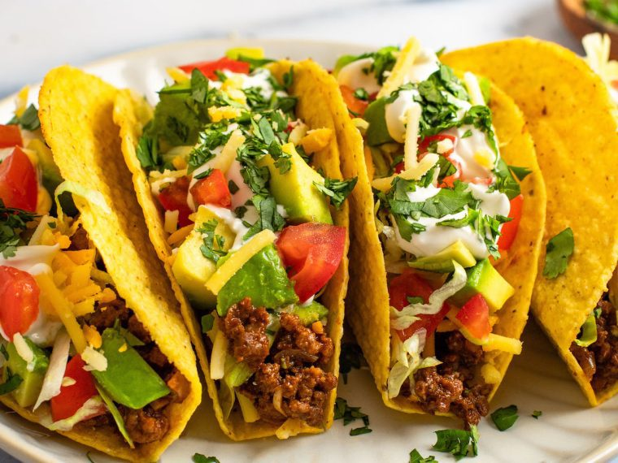
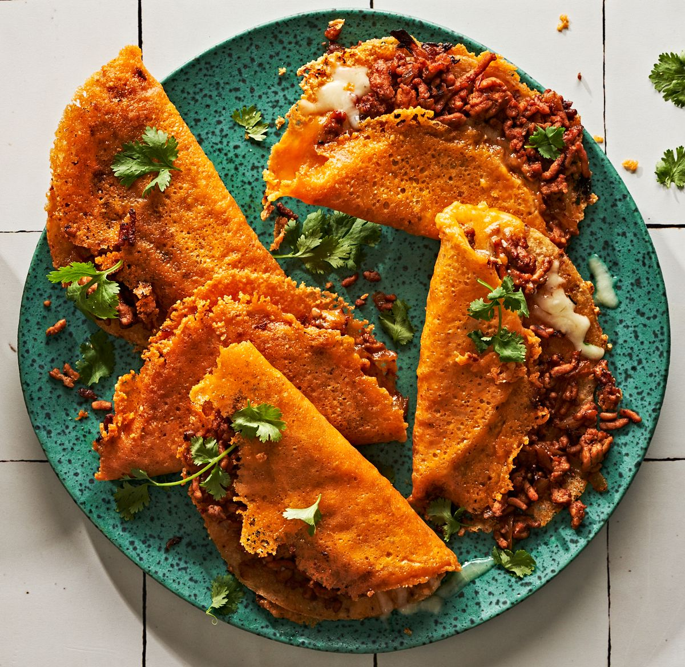

LOOKING FOR THE BEST TACOS IN TOWN? Look no further. At DOS TACOS, we have over 100 mexican dishes. Let's start our journey at the birthplace of tacos – Mexico City. Here, amidst the vibrant colors and lively atmosphere of street markets, you'll find Tacos al Pastor, a culinary masterpiece that blends Spanish and Middle Eastern influences. Marinated pork, cooked on a vertical spit, is thinly sliced and served on warm corn tortillas, topped with pineapple, onions, cilantro, and a squeeze of lime. Each bite is a burst of flavor, a perfect harmony of sweet, savory, and spicy.

Recipes from world famous chefs who have spent years mastering their craft. For many aspiring chefs, the journey begins in the bustling kitchens of renowned restaurants or under the guidance of seasoned mentors. These formative years are characterized by long hours, intense heat, and a relentless pursuit of knowledge. Apprentices soak up everything like a sponge, learning the intricacies of flavor combinations, knife skills, and the art of presentation.